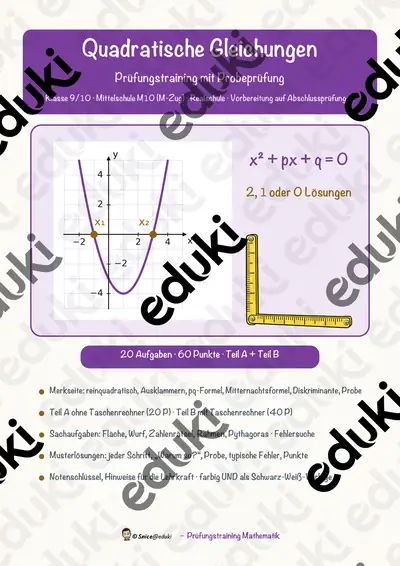
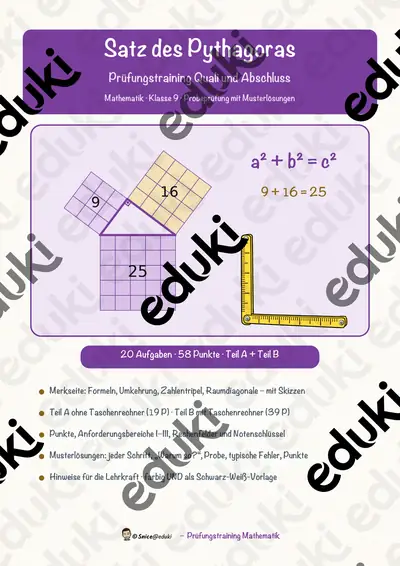
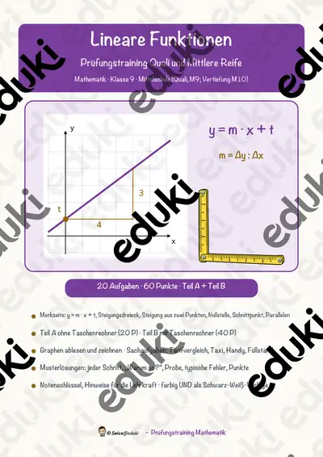
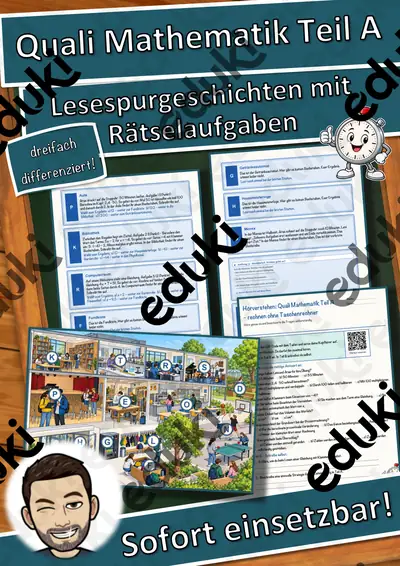
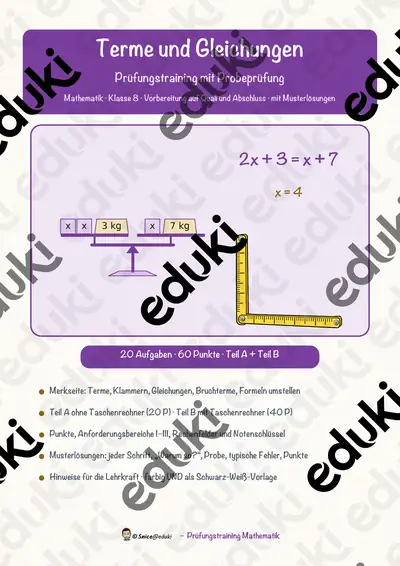
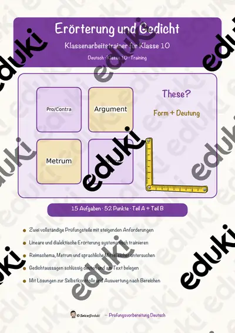

Klassenarbeitstrainer Mathematik Klasse 9 – Quadratische Funktionen und Pythagoras
Quadratische Funktionen verstehen, Gleichungen sicher lösen und den Satz des Pythagoras anwenden: Mit diesem Klassenarbeitstrainer für Mathematik in Klasse 9 bereiten sich Schülerinnen und Schüler gezielt auf eine Klassenarbeit vor. Die Kombination aus kompakter Wiederholung, abwechslungsreichen Prüfungsaufgaben und ausführlichen Musterlösungen unterstützt selbstständiges Lernen und eine realistische Selbsteinschätzung.SOFORT EINSETZBARDas Material eignet sich zum Wiederholen, Üben und Überprüfen des eigenen Lernstands. Die Aufgaben sind in zwei Prüfungsteile gegliedert und orientieren sich an typischen Anforderungen der Sekundarstufe I. Eine klare Punkteverteilung und die drei Anforderungsbereiche erleichtern die Orientierung.WICHTIG: FARBE UND SCHWARZ-WEISSDas Material ist für die Verwendung in Farbe und als Schwarz-Weiß-Ausdruck vorgesehen. Die Aufgaben sind ohne zusätzliche Abbildungen lösbar. Rechenfelder bieten Platz für nachvollziehbare Lösungswege.DAS IST ENTHALTEN
- Deckblatt mit Themenübersicht
- Kompakte Merkseite mit sechs Lernboxen und typischen Fehlern
- Hinweise zur Bearbeitung des Probetests
- Teil A: Grundwissen und Anwendung mit 8 Aufgaben
- Teil B: Vertiefung und Problemlösen mit 8 Aufgaben
- Insgesamt 16 abwechslungsreiche Aufgaben
- Ausführliche Musterlösungen mit Rechenwegen und Proben
- Selbstauswertung mit Lernreflexion und WiederholungszielenINHALTLICHER SCHWERPUNKTDie Aufgaben behandeln Scheitelpunktform, Eigenschaften und Wertetabellen quadratischer Funktionen, Nullstellen und quadratische Gleichungen. Hinzu kommen Anwendungen des Satzes des Pythagoras in ebenen Figuren und Körpern, darunter Rechtecke, Dreiecke und Quader.ABGEDECKTE KOMPETENZENDie Lernenden erkennen und beschreiben Parabeleigenschaften, berechnen Funktionswerte und Nullstellen, stellen Funktionsgleichungen auf und lösen quadratische Gleichungen. Sie wenden den Satz des Pythagoras an, überprüfen die Rechtwinkligkeit von Dreiecken, untersuchen Fehler und begründen Ergebnisse in Sachzusammenhängen.EINSATZGeeignet für die individuelle Klassenarbeitsvorbereitung, Wiederholungsstunden, Lernzeiten, Hausaufgaben und selbstständiges Üben in Klasse 9. Vorgesehene Bearbeitungszeit: 90 Minuten, davon 40 Minuten ohne und 50 Minuten mit Taschenrechner.
Hinweis: Übungsaufgaben im Format der Prüfung (nachgebildet), keine Original-Prüfungsaufgaben. Die konkrete Stoffverteilung kann je nach Schulart und Bundesland abweichen.
Hinweis zu Bildern: Skizzen eigene Darstellung, Maskottchen mit KI-Werkzeugen gestaltet.
Ähnliche Materialien
Quadratische Funktionen – Prüfungstraining Mathematik (Klasse 9)

Quadratische Gleichungen – Prüfungstraining Mathematik (Klasse 9)

Satz des Pythagoras – Prüfungstraining Mathematik (Klasse 9)

Lineare Funktionen – Prüfungstraining Mathematik (Klasse 9)

Quali Mathematik Teil A – rechnen ohne Taschenrechner – Lesespurgeschichte mit Prüfungsaufgaben (Klasse 9)

Terme und Gleichungen – Prüfungstraining Mathematik (Klasse 8)

Materialpaket Prüfungstraining Mathematik Klasse 9: 10 Übungshefte mit Prüfungsteil und Lösungen
